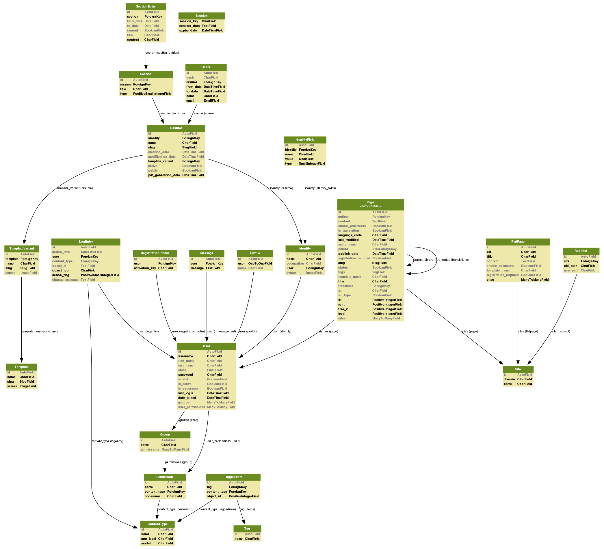

cv manager documentation¶

Contents
Introduction¶
What is CVM?¶
It’s a web application, that allows it’s users to easily manage, share and publish their resumes. It allows the user to create multiple identities for the purpose of managing resumes of multiple people, like family or friends. Each identity is able to contain multiple resumes of a person, so that each resume can be created for a specific job application. The user is able to choose a layout for the resume from templates designed by professional graphic artists.
Publication and Sharing¶
The user is able to generate PDF files for printing or electronic use. The user is also able to publish a resume on the portal or to send a link, allowing the manager to view a resume for a limited period of time.
How CVM works?¶
- User registers
- User creates new Resume
- User fills in Resume a. User creates or chooses already created Identity b. User uploads or chooses already uploaded Photo c. Users fills in Sections and Entries
- User Shares or Publish Resume
- User edits or creates new Resumes
Structure¶
Models schema¶
Resumes app¶
- class resumes.models.Identity(*args, **kwargs)¶
Identity(id, name, occupation, user_id, avatar)
- get_email()¶
Tries to obtain email from identity_fields, defaults to user.email
- get_field_names()¶
Returns list of all fields names
- get_field_values()¶
Returns list of all fields values
- get_fields()¶
Returns list of IdentityField as tuples, each containing field name, value and type display
- class resumes.models.IdentityField(*args, **kwargs)¶
IdentityField(id, identity_id, name, value, type)
- class resumes.models.Resume(*args, **kwargs)¶
Resume(id, identity_id, name, slug, creation_date, modification_date, template_variant_id, active, public, pdf_generation_date)
- generate_pdf()¶
generates pdf
- get_absolute_url(*moreargs, **morekwargs)¶
returns absolute url to Resume
- get_pdf_file()¶
returns pdf file instance. generates it if’s not there
- get_pdf_filename()¶
returns path to pdf file
- get_pdf_url()¶
returns absolute url to pdf file
- get_template_name()¶
returns template name that resuem should be rendered to
- class resumes.models.Section(*args, **kwargs)¶
Section(id, resume_id, title, type)
- class resumes.models.SectionEntry(*args, **kwargs)¶
SectionEntry(id, section_id, from_date, to_date, current, title, content)
- class resumes.models.Template(*args, **kwargs)¶
Template(id, name, slug, screen)
Sharing app¶
Share(id, hash, resume_id, from_date, to_date, name, email)
Accounts app¶
- class accounts.models.Profile(*args, **kwargs)¶
Profile(id, user_id, name)
Source¶
All sources for this project are available online at bitbucket.org/seler/cvm.
To clone this repository run:
hg clone https://bitbucket.org/seler/cvm
Requirements¶
Django
Version 1.3 or higher.
PIL
Tested using version 1.1.7
django-registration
Version 0.7. Newer version wont work because of backwards imcompatible changes
xhtml2pdf
Make sure you checkout latest source from https://github.com/chrisglass/xhtml2pdf